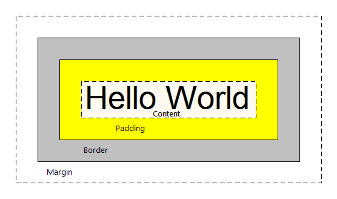

What are padding, border and margin? They are control properties. Padding and Margin allow us to manage spaces between controls, and Border is used to draw a border around the control and indicate its size, color, etc. The image below shows how these properties are displayed at runtime:  In GeneXus, they are set in the classes of the SD theme used in the application. Their values are expressed in DIPs (Device Independent Pixel) and they can be applied to the following controls and/or classes:
ExampleLet’s see how to apply these properties in a 'Table' control in an object of "panel for SD" type. It is assigned the Table Class of the theme with the following properties: The result at runtime is as follows:
NotesWhen setting these properties, certain considerations must be taken into account. Otherwise, it may happen that controls are not “drawn” as expected when executing it. They may also be cut or shown in a different place. Let’s see an example of a BAD design to better understand the problem of incorrectly setting these properties in GeneXus. Let’s suppose that we have a ‘table’ with rows style = 64 dips, and that we set margin, border and padding values for it. In all, they exceed 64 dips. For example, we create a class where MarginTOP and BOTTOM=20, BORDER= 10 and PADDING=10. Therefore, if we add only borders and spaces we have 20+10+10 on top + 20+10+10 at the bottom. It’s a total of 80 dips taken by these properties, when the row has only 64dips. What happens when it is executed? In this case, ‘Hello World’ is NOT displayed in the expected place:
|
| Backlinks | ||
| Attribute theme-class | Button theme-class for Smart Devices | Grid theme-class for Smart Devices |
| Slider Theme class |